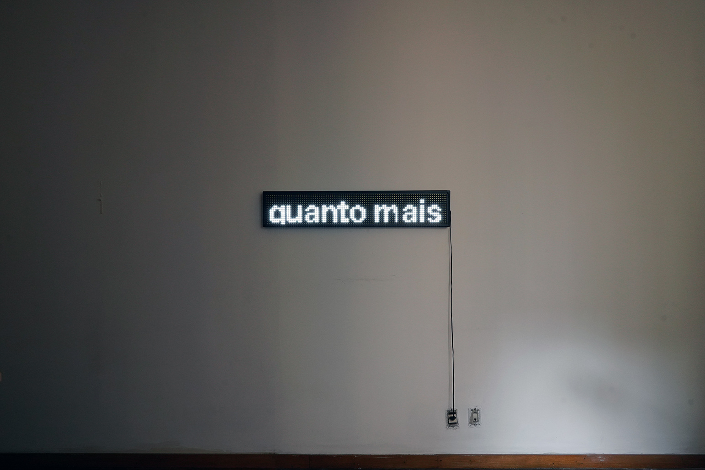
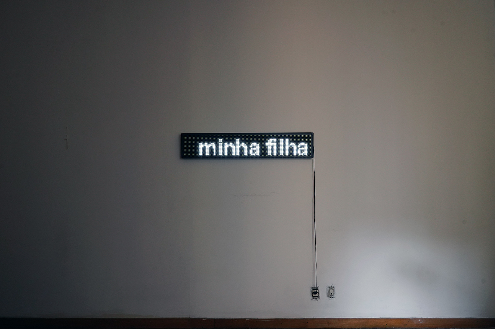
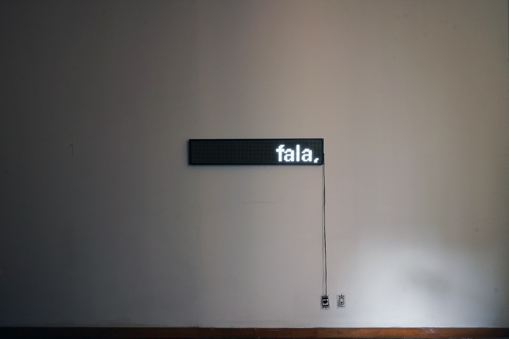
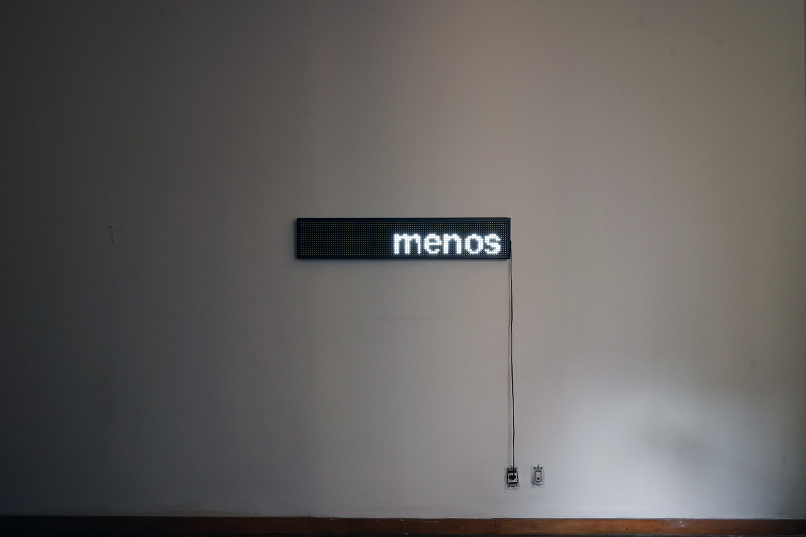
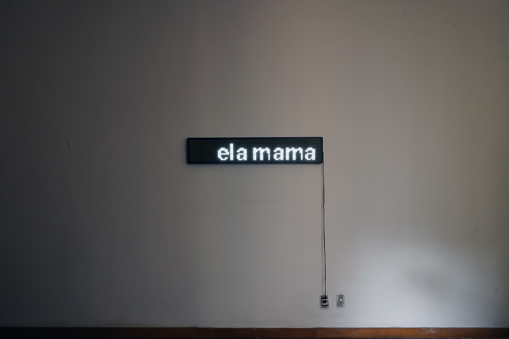

Chão da linguagem
Chão da linguagem, 2021. Letreiro de led, 100 cm x 20 cm
“Quanto mais minha filha fala, menos ela mama”
O leite é sua relação mililítrica com o mundo, é sua primeira língua, é a língua-mãe, língua materna - e, veja bem, esse materna não é em relação à mãe, mas à matéria (materia e mater em latim). A primeira observação de meu pequeno laboratório doméstico, o seio vazando leite, me mostra que a primeira condição da comunicação daquela que nasce é radicalmente imanente: líquida, leitosa, gordurosa, doce, aguda. A substância que escorre desse laboratório-teta se chama cientificamente de leite materno e contém em sua formulação os ingredientes necessários para que aquela que o recebe se desenvolva plena, satisfeita, saudável, gorda, feliz e ligeiramente embriagada. O que acontece nessa dinâmica, do leite que brota de um lado, de um corpo, e se contempla fisicamente em outro corpo, menor e aparentemente passivo, é uma comunicação fina, singular, técnica, precisa e, de novo, radicalmente imanente. Mas então, não seria mais interessante dizer que leite é outra coisa em vez de afirmar que leite se constitui física e metafisicamente como língua/linguagem, dada a problemática definição do conceito de linguagem no curso da história? Posso afirmar que não! Bater firme o pé no chão pra dizer que, sim, leite é língua, é linguagem e não é à toa, é uma afirmação política, uma apropriação feminista do que poderia ser o conceito de linguagem e uma transformação desse conceito por meio de um outro olhar sobre sua dinâmica. Assim como linguagem já se mostrou por A + B não ser uma excepcionalidade humana, leite também não é uma excepcionalidade mamífera, nem símbolo uma excepcionalidade da linguagem. Há muito o que se percorrer dentro das categorias taxonômicas que dispõem dos nossos corpos no mundo e também há muito que se pensar coletivamente para reescrever essas e outras histórias que precisam ser contadas. No meu caso, nada como uma experimentação teórica feminista, ou mobilizando o termo de Mariana Pimentel, teórica-doméstica, para formular perguntas para a resposta “quanto mais minha filha fala, menos ela mama”.
“A palavra cão não morde”, mas pode vir a morder.
The ground of language, 2021. Led sign, 100 cm x 20 cm.
"The more my daughter speeks, the less she nurses"
Milk is her millilitric relation to the world, it is her first language, it is the mother tongue, maternal language - and, you see, this maternal is not in relation to the mother, but to matter (materia and mater in Latin). The first observation of my small domestic laboratory, the breast leaking milk, shows me that the first condition of communication of the one born is radically immanent: liquid, milky, greasy, sweet, sharp. The substance that oozes from this laboratory-theta is scientifically called maternal milk and contains in its formulation the necessary ingredients for the one who receives it to develop fully, satisfied, healthy, fat, happy, and slightly drunk. What happens in this dynamic, of milk that sprouts from one side, from one body, and is physically contemplated in another body, smaller and apparently passive, is a fine, singular, technical, precise, and, again, radically immanent communication. But then, wouldn't it be more interesting to say that milk is something else instead of saying that milk is physically and metaphysically constituted as language, given the problematic definition of the concept of language in the course of history? I can affirm that it is not! To firmly put my foot down to say that, yes, milk is language and not for nothing, it is a political statement, a feminist appropriation of what the concept of language could be and a transformation of this concept through another look at its dynamics. Just as language has been shown by A + B not to be a human exceptionality, milk is not a mammalian exceptionality, nor is symbol an exceptionality of language. There is a lot to go through within the taxonomic categories that dispose of our bodies in the world, and there is also a lot to think collectively in order to rewrite these and other stories that need to be told. In my case, there is nothing like a feminist theoretical experimentation, or mobilizing Mariana Pimentel's term, theoretical-domestication, to formulate questions for the answer "the more my daughter talks, the less she sucks".
"The word dog does not bite," but it may come to bite.




